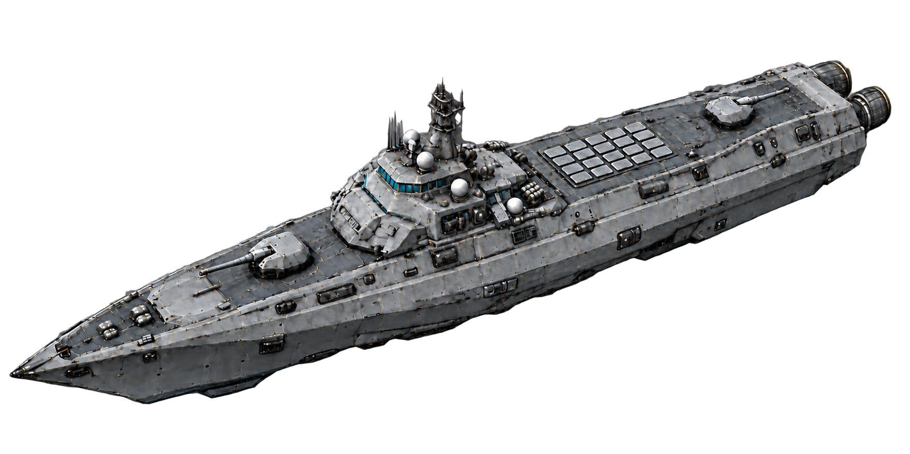

A frontier to protect.A ship to command.
One system. Our home. Your command.
Take command of the SDF Wayfarer at Earth on 1 January 2250. Plot your own patrol through the Solar System, investigate local contacts, and manage your ship from the bridge.
Starting a new mission replaces your current browser autosave. Download your patrol first if you want to keep it.
Campaign mode is not available in this prototype. Linked missions, campaign objectives, and progression have yet to be implemented.
You can explore the current game in New Mission: an open Solar System patrol with navigation, bridge stations, training encounters, combat, and ship repairs. Save your patrol to continue it later.
Humanity achieves cold fusion. Over the following century, new propulsion, inertial dampeners, and advanced protective materials open the Solar System to travel.
Electromagnetic Pulse Drives now carry ships across the system in a little over a month. Earth has a large station on the Moon; Mars has a surface colony and a station on Phobos.
Stations on Ganymede, Titan, Titania, and Triton anchor humanity’s presence around the outer planets. Sixteen commercial mining stations operate in the asteroid belt under United Nations of Earth contracts.
You are the captain of an SDF vessel patrolling our home system. Civilian traffic, commercial operators, privateers, and pirates share the frontier. From the bridge of the Wayfarer, your watch begins.
Returning to the menu pauses strategic and local flight. Continue returns to your patrol with flight paused so you can review your orders.
It is 2250. A century after the cold fusion breakthrough, humanity can cross its home system in a little over a month. Electromagnetic Pulse Drives, inertial dampeners, and advanced shielding have opened the frontier.
Your mission: patrol the Solar System. Select a planet or a point on the grid, add waypoints to your flight plan, and engage your EPD. Use the simulation controls to accelerate your journey.
The SDF Wayfarer, its class, and the heliopause station are provisional. The outer patrol boundary is set at 120 AU; a nominal 3.8 AU/day makes a radial crossing approximately 32 days. The map uses a compressed radial scale and illustrative planet positions, held fixed during this prototype. Travel uses distances in AU, with straight legs and a safety exclusion around Sol. Complete patrol progress is autosaved in this browser. Use Saves to download or load a JSON save file. Strategic and local flight resume paused after reload.
Keep a portable JSON save of your strategic journey, local flight, sensor history, target locks, and bridge settings.
Commercial extraction rights granted by the United Nations of Earth government.